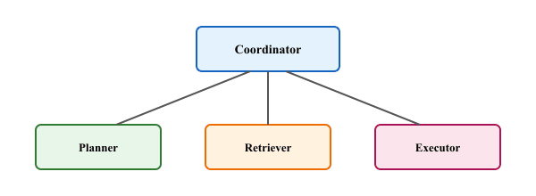

"A budget the model can ignore is not a budget. A permission the model can talk its way around is not a permission."
Deploy, Production-Hardened AI Agent
This section continues from Section 26.5, which introduced the eight-component reference architecture and built the Planner, Tool Router, Execution Sandbox, and the resilience primitives (rate limiting, circuit breakers, graceful degradation). Here we cover the four remaining concerns that turn that scaffolding into a production system: per-request token budgets and cascade routing, the Permissions Gate with audit logging, recovery patterns (checkpoint and resume, idempotent actions, rollback), and the end-to-end AgentSystem wiring that ties everything together in a single handle() method.
Prerequisites
This section continues from Section 26.5. Familiarity with the eight-component architecture, the Planner, Tool Router, Execution Sandbox, and CircuitBreaker code from there is assumed.
Researchers running multi-agent simulations on a synthetic startup task found that without explicit coordination protocols, agents quickly evolved bureaucratic behaviors: status-update preambles, defensive justifications, and what one paper memorably called 'CYA emails'. The lesson is that emergent coordination, in the absence of structure, tends to recapitulate every dysfunction of large human organizations, just faster and with more whitespace.

26.5.5 Cost Control: Token Budgeting and Cascade Routing
Agent systems can consume tokens at an alarming rate. A single complex request might trigger dozens of LLM calls across planning, tool selection, evaluation, and replanning. Without explicit cost control, a runaway agent loop can burn through an entire monthly API budget in minutes. The Cost Controller addresses this with two mechanisms: per-request token budgets and cascade routing.
Per-Request Token Budgets
Each AgentRequest carries a max_budget_usd field. The Cost Controller tracks cumulative spending across all LLM calls and tool invocations within a single request. Before each LLM call, the controller checks the remaining budget. If the remaining budget is too low for the planned call, the agent must either abort or switch to a cheaper strategy.
Cascade Routing
Cascade routing sends requests to the cheapest adequate model first and only escalates to more expensive models when the cheaper one cannot produce a satisfactory result. For example, simple tool selection might use gpt-4o-mini at $0.15 per million input tokens, while complex multi-step planning escalates to claude-sonnet-4-20250514 or o3. The evaluator's quality score determines whether escalation is needed.
from dataclasses import dataclass
@dataclass
class ModelTier:
name: str
model_id: str
cost_per_1k_input: float
cost_per_1k_output: float
class CostController:
"""Tracks spending and routes to the cheapest adequate model."""
TIERS = [
ModelTier("fast", "gpt-4o-mini", 0.00015, 0.0006),
ModelTier("balanced", "claude-sonnet-4-20250514", 0.003, 0.015),
ModelTier("powerful", "o3", 0.01, 0.04),
]
def __init__(self):
self._spent: dict[str, float] = {}
def record_cost(self, session_id: str, cost_usd: float):
self._spent[session_id] = self._spent.get(session_id, 0.0) + cost_usd
def can_afford(self, session_id: str, budget: float, estimated: float) -> bool:
return self._spent.get(session_id, 0.0) + estimated <= budget
def select_tier(self, session_id: str, budget: float,
min_tier: str = "fast"):
"""Cheapest tier at or above min_tier within budget."""
started = False
for tier in self.TIERS:
if tier.name == min_tier: started = True
if not started: continue
estimated = 2 * tier.cost_per_1k_input + 0.5 * tier.cost_per_1k_output
if self.can_afford(session_id, budget, estimated):
return tier
return None # Budget exhaustedCascade routing often saves 60 to 80% of API costs with minimal quality degradation. In practice, most agent steps (simple tool dispatch, formatting results, short follow-up questions) do not require the most capable model. Reserve expensive models for the planning phase and for recovery after evaluation failures. Measure your cascade hit rate (the percentage of calls handled by the cheapest tier) as a key operational metric.
26.5.6 Permissions Model
The Permissions Gate enforces security at three levels: user-level access (who can use the agent), tool-level access control lists (which tools a given user can invoke), and action-level constraints (what parameters are allowed). Every tool invocation passes through the gate before reaching the sandbox. This is especially important for agents that can execute code, send emails, modify databases, or access external services.
Audit logging is the companion to access control. Every permission check, whether it passes or fails, is logged with a timestamp, user ID, tool name, and the decision. This log serves both security auditing and debugging purposes. When an agent produces an unexpected result, the audit log reveals exactly which tools it invoked and in what order.
import logging
from datetime import datetime, timezone
audit_log = logging.getLogger("agent.audit")
class PermissionsGate:
"""Enforces tool-level access control with audit trail."""
def __init__(self, acl: dict[str, list[str]]):
self._acl = acl
def check(self, user_id: str, user_perms: list[str],
tool_name: str, tool_args: dict) -> bool:
required = self._acl.get(tool_name, [])
allowed = all(p in user_perms for p in required)
audit_log.info(
"permission_check | %s | user=%s | tool=%s | "
"required=%s | granted=%s | args_keys=%s",
datetime.now(timezone.utc).isoformat(),
user_id, tool_name, required, allowed,
list(tool_args.keys()),
)
return allowed
def filter_tools(self, user_perms: list[str], tools: list[dict]):
"""Return only tools the user is allowed to invoke."""
return [t for t in tools
if all(p in user_perms for p in t.get("permissions", []))]26.5.7 Recovery Patterns
Failures in agent systems are inevitable. Tools time out, APIs return errors, and LLMs produce invalid outputs. The Recovery Handler implements three patterns that keep the agent operational despite failures.
Checkpoint and Resume
After each successful step, the agent saves a checkpoint containing the current plan state, all completed step results, and the accumulated context. If a later step fails and the agent must restart, it resumes from the last checkpoint rather than repeating all previous work. This is particularly valuable for long-running tasks that span many tool calls.
Idempotent Actions
Tools should be designed so that repeating the same call produces the same result without harmful side effects. For example, a "create file" tool should check whether the file already exists before creating it. When idempotent design is not possible (such as sending an email), the agent should track which actions have been executed and skip them on retry.
Rollback
For operations that support undo (database transactions, file system changes, API operations with delete endpoints), the Recovery Handler can reverse completed steps when a later step makes the entire plan invalid. The key requirement is that each tool registers a rollback function alongside its forward function.
Design your tools with recovery in mind from the start. Every tool should answer three questions: (1) Is this action idempotent? (2) Can it be rolled back? (3) What does a partial failure look like? Documenting these properties in the tool's metadata allows the Recovery Handler to make informed decisions automatically rather than relying on hardcoded retry logic.
26.5.8 Wiring It All Together
The following code shows the complete agent system skeleton that wires all eight components into a single AgentSystem class. This is a minimal but functional implementation that you can use as a starting point for production systems. Each component is injected as a dependency, making it straightforward to swap implementations (for example, replacing the in-memory cost tracker with a Redis-backed one).
class AgentSystem:
"""Wires all eight components into a production agent."""
def __init__(
self,
planner: Planner,
tool_router: ToolRouter,
sandbox: ExecutionSandbox,
cost_ctrl: CostController,
perms_gate: PermissionsGate,
circuit_breaker: CircuitBreaker,
memory_manager=None,
):
self.planner = planner
self.tool_router = tool_router
self.sandbox = sandbox
self.cost_ctrl = cost_ctrl
self.perms_gate = perms_gate
self.circuit_breaker = circuit_breaker
self.memory_manager = memory_manager
async def handle(self, request: AgentRequest) -> AgentResponse:
# 1. Load memory context (if memory manager is configured)
memory_context = "" if self.memory_manager is None else self.memory_manager.load(request.session_id)
# 2. Build a plan
available = self.perms_gate.filter_tools(request.permissions, self.tool_router.describe_all())
plan = await self.planner.create_plan(request, memory_context, available)
# 3. Execute each step with permission and budget checks
total_cost, completed, failed = 0.0, 0, 0
for step in plan.steps:
if self.circuit_breaker.is_open(step.tool_name):
step.status = StepStatus.SKIPPED; failed += 1; continue
if not self.perms_gate.check(request.user_id, request.permissions,
step.tool_name, step.tool_args):
step.status = StepStatus.FAILED; failed += 1; continue
ok, result = await self.sandbox.execute(self.tool_router.get_tool(step.tool_name), step.tool_args)
if ok:
step.status = StepStatus.SUCCESS; step.result = result; completed += 1
self.circuit_breaker.record_success(step.tool_name)
else:
step.status = StepStatus.FAILED; failed += 1
self.circuit_breaker.record_failure(step.tool_name)
return AgentResponse(message="Completed.", plan=plan,
total_cost_usd=total_cost,
steps_completed=completed, steps_failed=failed)handle() method.26.5.9 Putting It Into Practice
To see how the system skeleton comes together, consider a concrete scenario: a customer support agent that can look up orders, check inventory, issue refunds, and send emails. Each of these is a tool with specific permissions.
from openai import AsyncOpenAI
import asyncio
async def lookup_order(order_id: str):
return {"order_id": order_id, "status": "shipped", "total": 49.99}
async def issue_refund(order_id: str, amount: float):
return {"order_id": order_id, "refunded": amount, "success": True}
router = ToolRouter()
router.register("lookup_order", lookup_order)
router.register("issue_refund", issue_refund, required_permissions=["refunds"])
agent = AgentSystem(
planner=Planner(AsyncOpenAI()),
tool_router=router,
sandbox=ExecutionSandbox(timeout_seconds=15.0),
cost_ctrl=CostController(),
perms_gate=PermissionsGate({"lookup_order": [], "issue_refund": ["refunds"]}),
circuit_breaker=CircuitBreaker(),
)
request = AgentRequest(
user_id="agent-42", session_id="sess-001",
message="Check if order ORD-123 is shipped and refund it if so.",
permissions=["read", "refunds"], max_budget_usd=0.50,
)
response = asyncio.run(agent.handle(request))
print(response.message)Extend the CostController to track per-model-tier spending and per-tool spending separately. Add a method get_cost_breakdown(session_id) that returns a dictionary with keys "by_tier" and "by_tool", each mapping to sub-dictionaries of costs.
Answer Sketch
Add two more dictionaries alongside _spent: _by_tier[session_id][tier_name] and _by_tool[session_id][tool_name]. Update record_cost() to accept tier_name and tool_name parameters and increment the appropriate counters.
Implement a CheckpointManager that saves agent state after each successful step and can resume from the last checkpoint. Use JSON serialization to persist the plan state and completed step results to a file. Add a resume(session_id) method to AgentSystem.
Answer Sketch
Create a CheckpointManager class that writes {session_id}.json after each successful step, containing the serialized AgentPlan and the index of the last completed step. In AgentSystem.handle(), check for an existing checkpoint at the start. If found, deserialize the plan and skip steps that are already marked as SUCCESS.
- Per-request token budgets prevent runaway costs; cascade routing optimizes cost by trying cheaper models first (saves 60-80% in practice).
- The Permissions Gate enforces tool-level ACLs and emits an audit log entry on every check, granting or denying.
- Recovery rests on three patterns: checkpoint and resume, idempotent actions, and tool-level rollback. Design tools with these in mind from day one.
- The full AgentSystem is a thin
handle()method that composes the eight injected components; swap any one (e.g., in-memory cost tracker for Redis) without touching the others.
Show Answer
Most agent steps (simple tool dispatch, formatting results, short follow-up questions) do not require the most capable model. The cheaper tier handles them adequately, and only planning and recovery escalate to expensive models. Measure the cascade hit rate (percentage of calls handled by the cheapest tier) as a key operational metric.
Show Answer
(1) Is the action idempotent? (2) Can it be rolled back? (3) What does a partial failure look like? Documenting these in the tool's metadata lets the Recovery Handler make informed decisions automatically instead of relying on hardcoded retry logic.
What Comes Next
The next section, Section 26.6: Memory Architecture for Agents, focuses on the agent-specific slice of LLM memory: plan and scratchpad memory for multi-step tasks, tool-call history, episodic memory of completed tasks, and agent-state checkpointing for resumability.